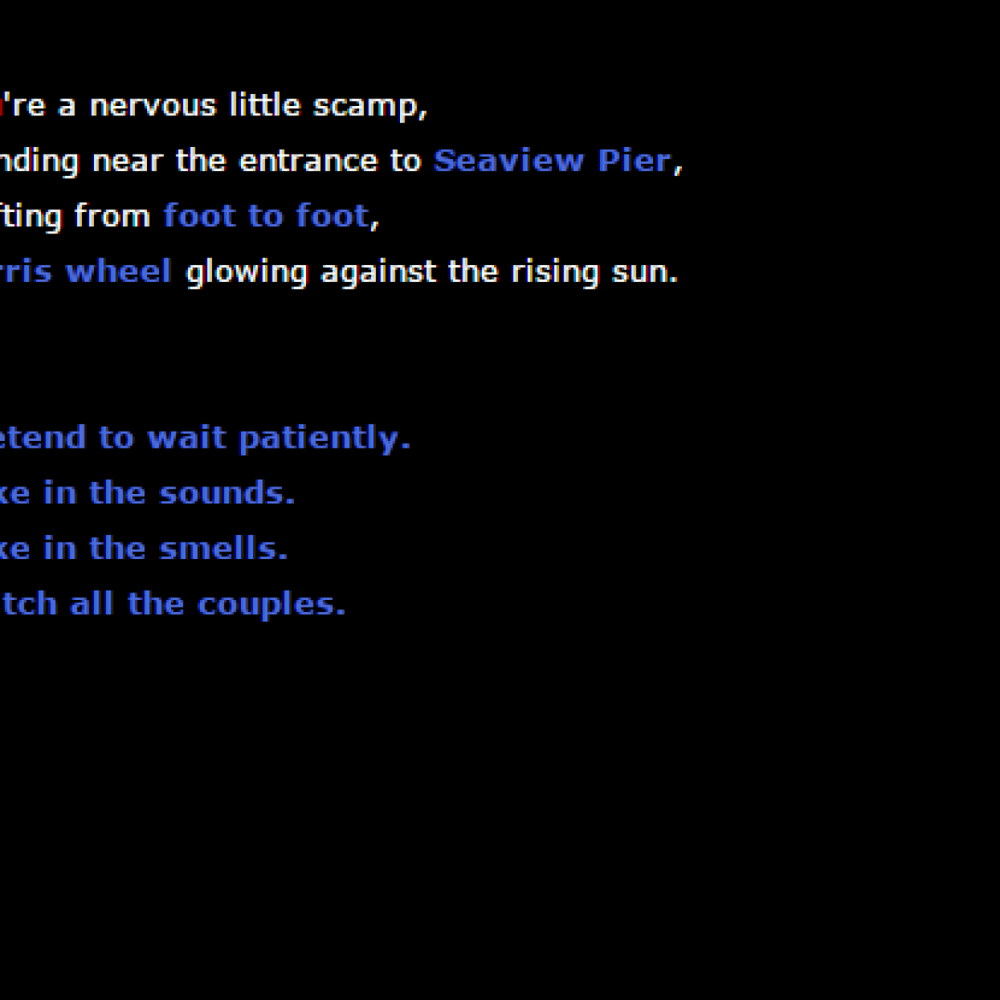

An interactive fiction Twine game about a boy and a girl and a general.
Music and soundscape by Julie Buchanan

Game 67/100
An interactive fiction Twine game about a boy and a girl and a general. Music and soundscape by Julie Buchanan
An interactive fiction Twine game about a boy and a girl and a general.
Music and soundscape by Julie Buchanan